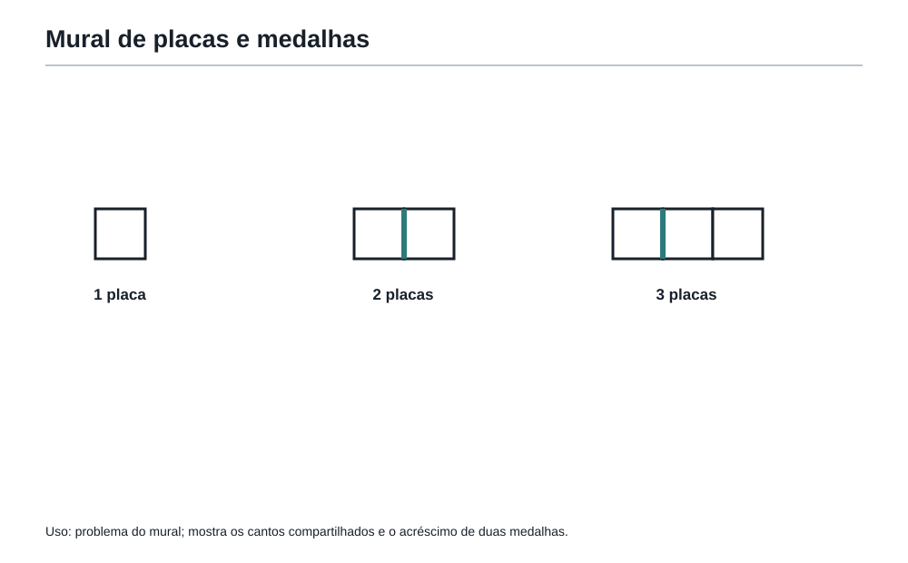

A primeira chave
1. Antes da primeira conta
Felipe chegou à porta da Academia do Raciocínio esperando encontrar uma sala cheia de fórmulas.
Imaginou quadros cobertos de contas enormes, professores falando rápido e estudantes respondendo antes mesmo de terminar a pergunta.
Mas a primeira sala estava quase vazia.
Havia apenas uma mesa, três cadeiras, uma janela aberta e um cartaz na parede:
Antes de calcular, aprenda a olhar.
Felipe estranhou.
— Professor, não era para começar com números?
O Professor da Academia sorriu.
— Vamos começar com algo mais importante do que números.
— O quê?
— O modo de entrar em um problema.
Do alto de uma estante, uma pequena coruja desenhada em madeira parecia observar a conversa. Felipe ainda não sabia, mas aquela coruja seria chamada de Matemático Invisível. Ela apareceria sempre que uma pergunta pequena escondesse uma ideia grande.
O Professor colocou sobre a mesa cinco cartões:
2 4 6 8 10
— Qual é o próximo número? — perguntou.
Felipe respondeu quase sem respirar:
— 12.
— Pode ser — disse o Professor.
— Como assim, pode ser? É 12.
— Talvez. Mas antes de declarar vitória, diga qual regra você viu.
Felipe olhou de novo.
— Os números estão aumentando de 2 em 2.
— Ótimo. Com essa regra, o próximo é 12. Mas e se a regra fosse: “os cinco primeiros números pares positivos escritos em ordem”?
— Também daria 12.
— Sim. Agora imagine outra regra: “números pares até 10 e depois o número 100 para assustar quem responde depressa”.
Felipe riu.
— Aí seria 100. Mas isso seria uma regra meio maldosa.
— Seria. E nem sempre uma regra maldosa é uma boa regra matemática. O importante é perceber uma coisa: muitas vezes a primeira resposta nasce antes da primeira pergunta bem feita.
A coruja pareceu sussurrar:
“Responder rápido é diferente de entender.”
Felipe ficou olhando os cartões.
A primeira lição da Academia não era sobre o número 12.
Era sobre pressa.
2. A primeira chave
O Professor abriu uma pequena gaveta e tirou uma chave dourada.
— Esta é a primeira chave da Academia.
Felipe esperou alguma explicação complicada.
Mas o Professor apenas disse:
— Curiosidade.
— Só isso?
— Não é pouco. Um estudante curioso não pergunta apenas “qual é a resposta?”. Ele pergunta: - o que está acontecendo aqui? - por que esses dados foram escolhidos? - existe uma armadilha? - já vi algo parecido? - o que o problema realmente quer?
Felipe pegou a chave.
Ela era leve, mas parecia importante.
— A OBMEP gosta de estudantes curiosos? — perguntou.
— A OBMEP gosta de estudantes que pensam. Curiosidade é o começo desse pensamento.
A primeira ferramenta entrou na Mochila do Matemático.
Não era uma fórmula.
Era uma postura.
E, na Academia, postura vinha antes de técnica.
3. O problema da mesa incompleta
O Professor colocou agora alguns palitos sobre a mesa.
Com eles, formou uma figura simples:
Um quadrado feito com 4 palitos.
Depois, grudou outro quadrado ao lado do primeiro. A nova figura tinha 7 palitos, não 8, porque os dois quadrados compartilhavam um lado.
Depois, formou três quadrados em fila. Felipe contou 10 palitos.
O Professor escreveu:
| Quantidade de quadrados | Quantidade de palitos |
|---|---|
| 1 | 4 |
| 2 | 7 |
| 3 | 10 |
— Quantos palitos seriam necessários para formar 6 quadrados em fila? — perguntou.
Felipe quase começou a desenhar todos.
Mas parou.
O cartaz da parede ainda estava lá:
Antes de calcular, aprenda a olhar.
Ele observou a tabela.
De 4 para 7, aumentou 3.
De 7 para 10, aumentou 3.
— Cada novo quadrado acrescenta 3 palitos, porque um lado já está compartilhado.
— Continue — disse o Professor.
Felipe pensou:
1 quadrado: 4 palitos.
2 quadrados: 7.
3 quadrados: 10.
4 quadrados: 13.
5 quadrados: 16.
6 quadrados: 19.
— Para 6 quadrados, 19 palitos.
— Muito bem. Agora me diga: qual foi a parte mais importante?
— Contar direito?
— Também. Mas antes disso?
Felipe olhou novamente.
— Perceber que o quadrado novo não usa 4 palitos. Usa 3.
O Professor bateu palmas uma única vez.
— Exato. Você não venceu o problema porque fez uma conta grande. Venceu porque viu a estrutura.
A segunda ferramenta entrou na Mochila.
Mas o Professor fez questão de completar:
— Padrão não é adivinhação. Padrão é uma observação que começa a se repetir.
4. Observar não é ficar parado
Muita gente pensa que observar é não fazer nada.
Na Academia, observar é trabalho ativo.
Observar é comparar.
Observar é procurar o que muda.
Observar é procurar o que não muda.
Observar é desconfiar de respostas rápidas demais.
Observar é perguntar por que uma informação foi colocada no enunciado.
O Professor escreveu no quadro:
Um problema é uma sala.
Os dados são móveis.
A pergunta é a porta.
Antes de sair correndo, veja onde você está.
Felipe achou a frase um pouco estranha, mas entendeu a ideia.
Um estudante que entra em um problema com pressa tropeça nos móveis.
Um estudante que olha primeiro percebe o caminho.
5. Fatos, suposições e hipóteses
A coruja de madeira pareceu inclinar a cabeça.
O Professor colocou outro cartão sobre a mesa:
Em uma sala há 12 estudantes. Alguns usam camiseta azul. Os outros usam camiseta branca. Há mais estudantes de azul do que de branco.
— Quantos estudantes usam camiseta azul?
Felipe franziu a testa.
— Não dá para saber exatamente.
— O que você sabe?
— Que são mais de 6, porque se fossem 6 e 6 não haveria mais azuis do que brancos.
— Cuidado. “Mais de 6” é uma boa conclusão?
Felipe pensou.
Se há 12 estudantes e mais azuis que brancos, os azuis podem ser 7, 8, 9, 10, 11 ou 12.
— Sim. Pelo menos 7.
— E podem ser 12?
— Podem, se todos estiverem de azul. A frase diz “alguns usam camiseta azul. Os outros usam branca”. Espera… Se diz “os outros usam branca”, talvez existam outros.
O Professor sorriu.
— Ótimo. Você acabou de encontrar uma porta importante: leitura exata.
Felipe releu:
“Alguns usam camiseta azul. Os outros usam camiseta branca.”
Se “os outros” existem, então nem todos usam azul. Mas a palavra “alguns” às vezes pode ser usada de modo impreciso em textos comuns. Em matemática, precisamos tomar cuidado.
— Então o problema está um pouco ambíguo? — perguntou Felipe.
— Está. E reconhecer ambiguidade também é raciocínio.
O Professor escreveu três palavras:
Fato.
Suposição.
Hipótese.
Depois explicou:
- Fato é o que o enunciado garante.
- Suposição é algo que você colocou sem perceber.
- Hipótese é uma ideia que você testa sabendo que ainda pode estar errada.
Felipe anotou no caderno:
Nem tudo que parece estar no problema realmente está escrito no problema.
A terceira e a quarta ferramentas entraram na Mochila.
A Academia não queria que Felipe tivesse medo de imaginar caminhos.
Mas queria que ele soubesse testar esses caminhos.
6. A pergunta escondida
O Professor apagou parte do quadro e escreveu:
Uma sequência começa assim:
3, 6, 9, 12, 15, ...
— Qual é o vigésimo termo?
Felipe respondeu:
— É só continuar de 3 em 3 até o vigésimo.
— Pode fazer isso. Mas há um caminho melhor?
Felipe pensou.
Cada termo é 3 vezes a posição:
1º termo: 3
2º termo: 6
3º termo: 9
4º termo: 12
Então o 20º termo é 3 × 20 = 60.
— Resposta: 60.
— Muito bem. Agora mudo a pergunta:
Qual é a soma dos vinte primeiros termos?
Felipe começou:
3 + 6 + 9 + 12...
— Parece o mesmo problema, mas não é — percebeu.
— Essa é a pergunta escondida — disse o Professor. — Às vezes o enunciado se parece com um problema que você já viu, mas a pergunta final muda tudo.
Felipe entendeu.
No primeiro caso, queria um termo.
No segundo, queria um total.
O Professor disse:
— Uma das maiores causas de erro em prova não é falta de conteúdo. É responder uma pergunta parecida com a que foi feita, mas não a pergunta que foi feita.
A quinta ferramenta entrou na Mochila.
E logo depois veio outra:
Porque havia uma regra invisível perigosa: “se parece com o problema anterior, deve pedir a mesma coisa”.
Nem sempre.
7. Ler exatamente o que está escrito
Na sala seguinte da Academia, havia uma porta com a seguinte placa:
Para entrar, diga quantos números inteiros maiores que 10 e menores que 20 existem.
Felipe respondeu:
— De 10 até 20 são 11 números.
A porta não abriu.
Ele olhou de novo.
“Maiores que 10 e menores que 20.”
Não dizia “de 10 a 20”.
Não dizia “maiores ou iguais a 10”.
Não dizia “menores ou iguais a 20”.
Os números eram:
11, 12, 13, 14, 15, 16, 17, 18, 19.
— Nove números — disse Felipe.
A porta abriu.
A coruja parecia satisfeita.
O Professor comentou:
— Em matemática, uma palavra pequena muda uma resposta inteira.
Felipe percebeu que “maior que” e “maior ou igual a” não são a mesma coisa.
“Entre” pode precisar de cuidado.
“Exatamente” não é “pelo menos”.
“No máximo” não é “menos que”.
“Algum” não é “todos”.
A ferramenta seguinte entrou na Mochila.
O número da ferramenta parecia pular algumas posições porque a Mochila seria organizada ao longo do livro. Algumas ferramentas apareceriam com força agora, outras seriam aprofundadas depois.
Mas a ideia já estava plantada:
Quem lê com pressa resolve outro problema.
8. Mudar o ponto de vista
O Professor desenhou no quadro um retângulo dividido em quadradinhos.
E marcou uma região em forma de L.
— Quantos quadradinhos há na região marcada?
Felipe começou a contar um por um.
Depois percebeu que a figura em L podia ser vista de outro modo: era um retângulo maior com um pedaço faltando.
— Posso contar o retângulo inteiro e tirar o buraco?
— Pode.
— Então a figura difícil vira uma figura simples menos uma parte.
— Isso é mudar o ponto de vista.
A mesma ideia apareceria muitas vezes na Academia:
- uma sequência pode virar uma tabela;
- um caminho pode virar uma lista de passos;
- uma fração pode virar divisão;
- uma área complicada pode virar soma ou subtração de retângulos;
- um problema de frente pode ser resolvido de trás para frente;
- um erro pode virar pista.
Felipe gostou especialmente da última frase.
— Um erro pode virar pista?
— Pode, se você olhar para ele com honestidade.
A sétima e a oitava ferramentas entraram na Mochila.
O Professor completou:
— Erro escondido vira repetição. Erro observado vira treino.
Felipe não sabia ainda, mas essa ideia voltaria muitas vezes perto dos simulados.
9. O primeiro problema em estilo olímpico
O Professor abriu uma caixa pequena e tirou seis fichas numeradas:
1, 2, 3, 4, 5, 6
Depois disse:
Felipe deve escolher três fichas.
A soma dos números escolhidos deve ser 12.
De quantas maneiras diferentes ele pode fazer isso?
Felipe começou a pensar.
A primeira vontade era sair somando qualquer coisa.
Mas agora ele tinha uma Mochila, mesmo que ainda pequena.
Ele perguntou:
— A ordem importa?
— Boa pergunta.
— Se eu escolher 1, 5 e 6 é a mesma coisa que escolher 6, 5 e 1?
— Sim. São as mesmas três fichas.
Felipe começou a listar com cuidado.
Com 1:
1 + 2 + 9 não dá, 9 não existe.
1 + 3 + 8 não dá.
1 + 4 + 7 não dá.
1 + 5 + 6 = 12. Uma maneira.
Com 2:
2 + 3 + 7 não dá.
2 + 4 + 6 = 12. Outra.
2 + 5 + 5 não vale, porque só há uma ficha 5.
Com 3: 3 + 4 + 5 = 12. Outra.
Depois disso, se começasse com 4, repetiria casos já vistos: 4 + 3 + 5, por exemplo, era o mesmo que 3 + 4 + 5.
— Três maneiras — disse Felipe.
O Professor pediu:
— Agora explique como você sabe que não esqueceu nenhuma.
Felipe percebeu que a resposta sozinha não bastava.
Ele precisava justificar.
— Eu listei começando pelo menor número escolhido. Primeiro os casos com 1, depois com 2, depois com 3. Quando o menor fosse 4, os três números seriam pelo menos 4, 5 e 6, que somam 15, então passaria de 12. Por isso não há mais casos.
O Professor assentiu.
— Excelente. Você acabou de fazer uma solução, não apenas uma conta.
A coruja parecia sorrir.
Ver solução
10. O que uma solução precisa mostrar
Na OBMEP Segunda Fase, muitas questões pedem mais do que marcar uma alternativa.
É preciso mostrar o caminho.
A Academia não quer que Felipe escreva textos enormes.
Também não quer que ele esconda o raciocínio.
Uma boa solução precisa deixar claro:
- o que foi observado;
- que estratégia foi escolhida;
- como os casos foram organizados;
- por que a resposta encontrada é suficiente;
- qual é a resposta final.
O Professor mostrou duas respostas para o problema das fichas.
Resposta fraca:
Dá 3.
Resposta melhor:
As escolhas possíveis são {1,5,6}, {2,4,6} e {3,4,5}. Para não repetir casos, listei sempre do menor para o maior. Não há outros casos, pois começando por 4 a menor soma possível seria 4+5+6=15, maior que 12. Portanto, há 3 maneiras.
Felipe percebeu a diferença.
A primeira resposta talvez estivesse certa, mas não mostrava pensamento.
A segunda mostrava controle.
O Professor disse:
— A prova não vê o que ficou dentro da sua cabeça. Ela vê o que você conseguiu transformar em solução.
Essa ideia seria aprofundada mais tarde.
Por enquanto, bastava guardar:
Uma resposta certa sem explicação pode ser frágil.
Uma solução clara protege o raciocínio.
11. O problema das portas da Academia
Ao final da sala, havia três portas.
Sobre elas, três placas:
Porta A: “A porta correta é a B.”
Porta B: “A porta correta não é a C.”
Porta C: “A porta correta é a A.”
O Professor explicou:
Exatamente uma das três placas diz a verdade.
Qual porta é a correta?
Felipe respirou fundo.
Esse problema não parecia de conta.
Parecia de testar possibilidades.
Ele decidiu fazer uma hipótese de cada vez.
Hipótese 1: a porta correta é A
Se a correta é A:
- Placa A diz: “A porta correta é a B.” Falso.
- Placa B diz: “A porta correta não é a C.” Verdadeiro, porque é A.
- Placa C diz: “A porta correta é a A.” Verdadeiro.
Duas placas seriam verdadeiras. Mas o enunciado dizia exatamente uma.
Então a porta correta não pode ser A.
Hipótese 2: a porta correta é B
Se a correta é B:
- Placa A diz: “A porta correta é a B.” Verdadeiro.
- Placa B diz: “A porta correta não é a C.” Verdadeiro.
- Placa C diz: “A porta correta é a A.” Falso.
De novo, duas placas verdadeiras.
Então a porta correta não pode ser B.
Hipótese 3: a porta correta é C
Se a correta é C:
- Placa A diz: “A porta correta é a B.” Falso.
- Placa B diz: “A porta correta não é a C.” Falso.
- Placa C diz: “A porta correta é a A.” Falso.
Nenhuma placa verdadeira.
Também não serve.
Felipe ficou parado.
— Então nenhuma porta funciona?
— Essa é uma conclusão possível — disse o Professor.
— Mas o problema perguntou qual porta é a correta.
— E talvez essa pergunta tenha sido feita para testar se você aceita uma contradição só porque espera que exista uma resposta.
Felipe olhou as placas de novo.
Exatamente uma deveria dizer a verdade.
Nenhuma hipótese dava exatamente uma.
Logo, com essas placas, não existe porta correta que satisfaça a condição.
— Então a resposta é: não há solução.
— Isso mesmo.
Felipe achou estranho, mas poderoso.
A matemática não era obrigada a confirmar o que a pergunta parecia prometer.
A ferramenta de “verificar a possibilidade” ainda seria aprofundada depois, mas sua semente estava ali.
Às vezes, a melhor resposta é mostrar que a situação não pode acontecer.
12. Quando o problema engana sem mentir
O Professor disse:
— Um bom problema não precisa mentir para enganar. Basta ele deixar você completar o enunciado com coisas que não foram ditas.
Felipe pensou nos exemplos do dia:
- Na sequência dos números pares, ele tinha achado que a regra era única.
- Na sala das camisetas, quase assumiu informações que não estavam claras.
- Na porta dos números entre 10 e 20, quase incluiu os extremos.
- No problema das fichas, podia ter contado a mesma escolha várias vezes.
- Nas portas da Academia, podia ter forçado uma resposta inexistente.
O Professor escreveu:
O problema entrega pistas.
A pressa inventa o resto.
A coruja pareceu aprovar.
13. Um pequeno mapa para entrar em problemas
A Academia não queria que Felipe decorasse uma lista enorme antes de começar.
Mas ofereceu um pequeno mapa.
Ao encontrar um problema, ele poderia perguntar:
- O que o problema está pedindo exatamente?
- Quais dados são fatos garantidos?
- Estou supondo algo que não foi dito?
- Existe padrão, organização ou repetição?
- A ordem importa?
- Há casos diferentes?
- Posso desenhar, tabelar ou mudar o ponto de vista?
- Minha resposta precisa de justificativa?
- Como sei que não esqueci nenhum caso?
- A situação é realmente possível?
O Professor avisou:
— Você não vai usar todas essas perguntas em todos os problemas. Elas são como lanternas. Cada problema pede uma luz diferente.
Felipe gostou da imagem.
A Mochila do Matemático não era um peso.
Era um conjunto de lanternas.
OBMEP14. Problema em estilo OBMEP — O mural de medalhas
Na entrada da Academia, há um mural formado por placas quadradas iguais, colocadas em fila.
Em volta de cada placa, são colocadas medalhas nos cantos e nos pontos de encontro entre as placas. A figura abaixo representa a ideia:
- com 1 placa, aparecem 4 medalhas;
- com 2 placas em fila, aparecem 6 medalhas;
- com 3 placas em fila, aparecem 8 medalhas.

Quantas medalhas aparecem em um mural com 10 placas em fila?
Ver solução
Antes da solução
Pense alguns instantes.
O problema não pergunta quantas medalhas caberiam se cada placa tivesse 4 medalhas separadas.
As placas compartilham pontos quando estão encostadas.
Ver solução
Solução comentada
Vamos observar a tabela:
| Placas | Medalhas |
|---|---|
| 1 | 4 |
| 2 | 6 |
| 3 | 8 |
Cada nova placa acrescenta 2 medalhas, não 4.
Por quê?
Porque, ao colocar uma nova placa ao lado da anterior, dois pontos já pertencem à placa vizinha. Só aparecem dois novos pontos na borda externa.
Então:
1 placa: 4 medalhas.
2 placas: 6 medalhas.
3 placas: 8 medalhas.
4 placas: 10 medalhas.
5 placas: 12 medalhas.
A regra é:
número de medalhas = 2 × número de placas + 2.
Para 10 placas:
2 × 10 + 2 = 22.
Resposta: aparecem 22 medalhas.
O que este problema treinou
Não foi apenas uma conta.
Ele treinou: - observar uma construção; - perceber compartilhamento; - evitar multiplicar por 4 sem pensar; - transformar desenho em padrão; - justificar a regra.
OBMEP15. Problema em estilo OBMEP — Os números da porta
Para abrir uma porta, Felipe precisa escolher um número inteiro que satisfaça as três condições:
- é maior que 20 e menor que 40;
- é múltiplo de 3;
- quando dividido por 5, deixa resto 1.
Quais números Felipe pode escolher?
Ver solução
Solução comentada
Primeiro, vamos listar os múltiplos de 3 maiores que 20 e menores que 40:
21, 24, 27, 30, 33, 36, 39.
Agora verificamos o resto na divisão por 5:
- 21 deixa resto 1;
- 24 deixa resto 4;
- 27 deixa resto 2;
- 30 deixa resto 0;
- 33 deixa resto 3;
- 36 deixa resto 1;
- 39 deixa resto 4.
Portanto, os números possíveis são:
21 e 36.
O que este problema treinou
Ele treinou: - ler exatamente “maior que” e “menor que”; - trabalhar com condições ao mesmo tempo; - eliminar candidatos; - não procurar uma única resposta quando pode haver mais de uma.
A pergunta era “quais números”, não “qual número”.
Essa palavra muda tudo.
OBMEP16. Problema em estilo OBMEP — A caixa das fichas
Em uma caixa há fichas numeradas de 1 a 9.
Felipe quer escolher duas fichas diferentes cuja soma seja 10.
De quantas maneiras diferentes ele pode fazer isso?
Ver solução
Solução comentada
Vamos listar sem repetir.
Se a menor ficha escolhida for 1, a outra deve ser 9:
1 + 9 = 10.
Se a menor for 2:
2 + 8 = 10.
Se a menor for 3:
3 + 7 = 10.
Se a menor for 4:
4 + 6 = 10.
Se a menor for 5, precisaríamos de outra ficha 5, mas as fichas devem ser diferentes.
A partir de 6, repetiríamos casos já contados, como 6 + 4.
Portanto, as maneiras são:
{1, 9}, {2, 8}, {3, 7}, {4, 6}.
Resposta: 4 maneiras.
O que este problema treinou
Ele treinou: - organizar casos; - evitar repetição; - perceber se a ordem importa; - explicar por que a lista terminou.
Oficina17. Oficina Olímpica de Entrada — Antes da conta
Esta primeira oficina não quer velocidade.
Quer olhar.
Use o caderno se quiser. O mais importante é perceber a primeira jogada.
Desafio 1 — A palavra pequena
Quantos números inteiros são maiores que 15 e menores ou iguais a 22?
Ver solução
Solução
Os números são:
16, 17, 18, 19, 20, 21, 22.
São 7 números.
A palavra “maiores que 15” exclui o 15.
A expressão “menores ou iguais a 22” inclui o 22.
Desafio 2 — A sequência apressada
Uma sequência começa assim:
2, 5, 8, 11, 14, ...
Qual é o 10º termo?
Ver solução
Solução
A sequência aumenta de 3 em 3.
1º termo: 2.
2º: 5.
3º: 8.
4º: 11.
5º: 14.
6º: 17.
7º: 20.
8º: 23.
9º: 26.
10º: 29.
Resposta: 29.
Também poderíamos observar que, para chegar ao 10º termo, saímos do 1º termo e fazemos 9 aumentos de 3:
2 + 9 × 3 = 2 + 27 = 29.
Desafio 3 — A pergunta mudou
Na sequência do desafio anterior, qual é a soma dos três primeiros termos?
Ver solução
Solução
Agora a pergunta não quer o próximo termo nem o 10º termo.
Quer uma soma:
2 + 5 + 8 = 15.
Resposta: 15.
A primeira jogada é perceber que a pergunta mudou.
Desafio 4 — As camisetas
Em uma equipe há 18 estudantes. Exatamente 11 usam camiseta verde. Os outros usam camiseta branca.
Quantos usam camiseta branca?
Ver solução
Solução
Se há 18 estudantes ao todo e 11 usam verde, então os outros são:
18 − 11 = 7.
Resposta: 7 estudantes.
Aqui a palavra “exatamente” ajuda: não é “cerca de 11”, nem “pelo menos 11”.
Desafio 5 — A lista sem repetição
Com os números 1, 2, 3, 4 e 5, quantos pares diferentes podem ser formados usando dois números distintos, sem importar a ordem?
Ver solução
Solução
Vamos listar pelo menor número do par.
Com 1: {1,2}, {1,3}, {1,4}, {1,5} — 4 pares.
Com 2: {2,3}, {2,4}, {2,5} — 3 pares.
Com 3: {3,4}, {3,5} — 2 pares.
Com 4: {4,5} — 1 par.
Total:
4 + 3 + 2 + 1 = 10.
Resposta: 10 pares.
A ordem não importa: {1,4} e {4,1} são o mesmo par.
Desafio 6 — Atividade aberta — O erro que vira pista
Um estudante resolveu assim:
“Para formar 5 quadrados em fila, uso 5 × 4 = 20 palitos.”
Explique por que esse raciocínio está errado se os quadrados estão grudados lado a lado.
Critério de uma resposta completa: explicar o compartilhamento dos lados, mostrar por que 5 × 4 conta alguns palitos duas vezes e concluir corretamente que são necessários 16 palitos.
Ver solução
Solução
O erro está em contar cada quadrado como se estivesse separado.
Quando os quadrados ficam grudados, quadrados vizinhos compartilham um lado. Esse lado não deve ser contado duas vezes.
Para 1 quadrado: 4 palitos.
Cada novo quadrado acrescenta 3 palitos.
Para 5 quadrados:
4 + 4 × 3 = 4 + 12 = 16.
Ou, pela sequência:
1 quadrado: 4
2 quadrados: 7
3 quadrados: 10
4 quadrados: 13
5 quadrados: 16
Resposta correta: 16 palitos.
O erro foi útil porque mostrou exatamente a armadilha: esquecer os lados compartilhados.
18. As primeiras ferramentas da Mochila
Ao final da primeira entrada na Academia, Felipe ainda não sabia tudo.
Na verdade, quase não sabia nada do que viria depois.
Mas já carregava algo mais importante do que uma fórmula decorada: um jeito de começar.
As primeiras ferramentas da Mochila eram:
- Curiosidade / observar antes de calcular.
- Procurar padrões.
- Colecionar observações.
- Criar hipóteses.
- Fazer boas perguntas.
- Questionar regras invisíveis.
- Mudar o ponto de vista.
- Transformar erros em pistas.
- Ler exatamente o que está escrito.
- Descobrir a pergunta escondida.
O Professor explicou:
— Algumas ferramentas serão aprofundadas muitas vezes. Outras só estão nascendo agora. Não se preocupe em decorar a lista. Preocupe-se em usar a Mochila quando o problema pedir.
Felipe fechou a Mochila.
Ela ainda estava leve.
Mas já fazia diferença.
19. A frase da Academia
Antes de sair, Felipe voltou ao primeiro cartaz da sala.
Agora ele parecia menos simples.
Antes de calcular, aprenda a olhar.
O Professor acrescentou uma segunda frase logo abaixo:
A primeira chave da matemática olímpica não é saber a resposta. É saber entrar no problema.
Felipe guardou isso.
Porque, dali em diante, cada capítulo abriria uma nova sala.
Números.
Restos.
Divisores.
Frações.
Padrões.
Figuras.
Contagem.
Lógica.
Simulados.
Mas todas as salas teriam a mesma fechadura inicial:
olhar antes de correr.
20. Pergunta para amanhã
Na saída, a coruja de madeira deixou um cartão preso à porta:
Os números parecem simples quando estão em fila.
Mas o que acontece quando começamos a olhar os números por dentro?
Felipe virou o cartão.
Do outro lado estava escrito:
Amanhã, a Academia abre o mundo dos números.
E, pela primeira vez, ele percebeu que talvez a matemática não fosse uma coleção de contas.
Talvez fosse uma forma de enxergar.